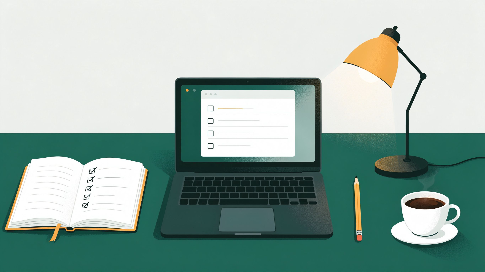

Create and edit
Add a task in seconds, then re-open it to change the due date or the notes when a deadline moves.
Every assignment, revision block and quiz for the semester in one list, sorted by the date it is actually due. No more guessing which deadline comes first.

StudyDeck exists because my own semester is spread over four courses, two campuses and a shared calendar that nobody updates. It replaces the notebook page and the loose spreadsheet with one page that always knows what is due next.
The purpose of the application is simple: give a student one place to record every academic task, then show those tasks in the order they need attention. Each task stores a title, the course code and course name, a due date, a short description and any extra notes, so a task such as “finish the Week 6 JavaScript exercises” keeps its context months later.
The app helps mainly with two problems. First, tasks are no longer scattered: everything is stored in one list that survives closing the browser, so nothing depends on remembering to re-open a notes file. Second, the list is honest about time: every task is tagged as upcoming, due within three days, or overdue, calculated from the real current date rather than from a label I typed in.
Add a task in seconds, then re-open it to change the due date or the notes when a deadline moves.
Deleting asks for confirmation first, so a mis-tap never removes a task that is still needed.
Empty titles, past dates and malformed course codes are rejected with a plain explanation.
Tasks are stored on this device only. There is no account, no upload and no third-party tracker.

I am Yuhao Wang, a second-year student in the dual degree programme between Xi'an University of Architecture and Technology and Adelaide University, studying in the Computer Science class of 2501. This semester I am taking Information Technology Systems (INFO 1012), data structures, object-oriented programming and a mathematics unit, so four deadlines can land in the same week.
My academic interests are web development and the way systems are put together: how a page is structured, how state is kept, and why a small validation rule saves a lot of debugging later. Outside class I play football and badminton, and I listen to music while reviewing notes.
How I manage study tasks: I plan in three-week blocks, put every deliverable into StudyDeck with its real due date, and work through the list from the top. Each block ends with a short review of what slipped, which is the habit the project plan on the blog page is built around.